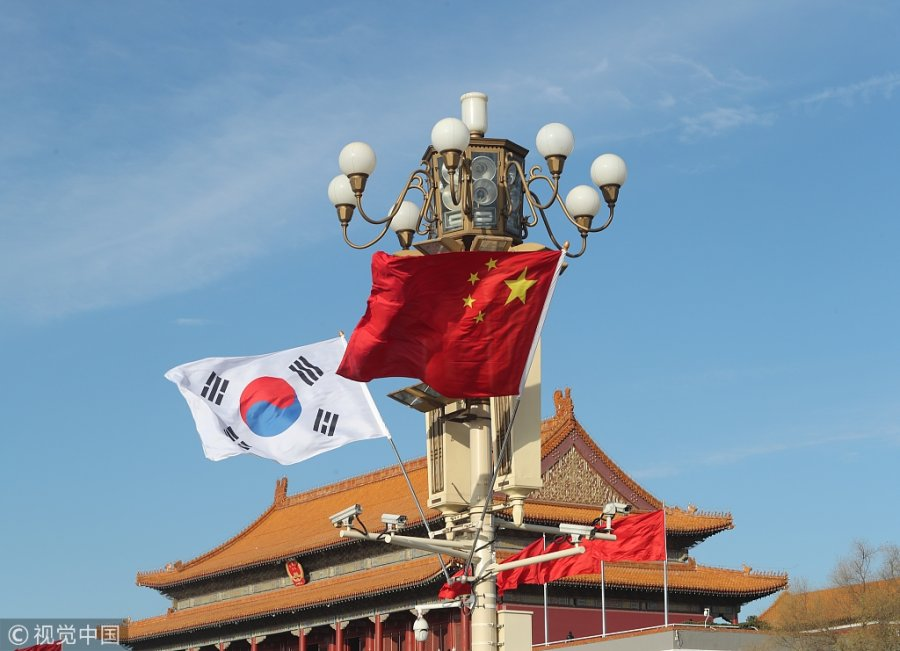

S. Korea's envoy summoned in China in tit-for-tat move

Recently, the tension between China and South Korea has escalated with China summoning South Korea's envoy in a retaliatory move against Seoul's earlier summoning of Beijing's ambassador over its military exercises with Russia in disputed waters. This is just one example of the ongoing tensions between the two nations.
Case Studies
- THAAD Controversy: In 2016, South Korea agreed to deploy the U.S. THAAD missile defense system to defend against possible missile attacks from North Korea. China has strongly opposed the deployment, claiming that it will destabilize the regional security balance and threaten China's national security.
- Trade Dispute: In 2017, China imposed a series of economic measures on South Korea in retaliation for Seoul's decision to deploy the THAAD system. China banned group tours to South Korea and suspended operations of South Korean businesses in China, which caused a significant economic impact on the South Korean economy.
- COVID-19 Fallout: In 2020, China accused South Korea of exporting defective face masks after a Chinese newspaper reported that some South Korean companies had exported masks that did not meet China's quality standards. This accusation further escalated tensions between the two nations amidst the COVID-19 pandemic.
Conclusion
The relationship between China and South Korea has been strained due to historical and political factors in recent years. Despite efforts to resolve these conflicts, tensions seem to persist. Both countries need to engage in open and honest dialogue to address their differences and reduce the potential for future conflict.
References and Hashtags
Curated by Team Akash.Mittal.Blog
Curated by Team Akash.Mittal.Blog
Share on Twitter Share on LinkedIn